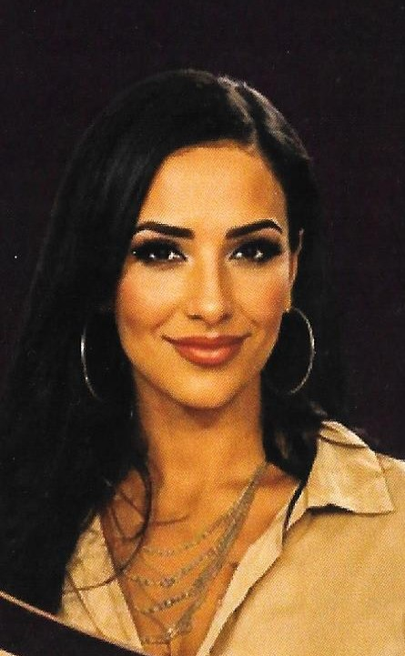
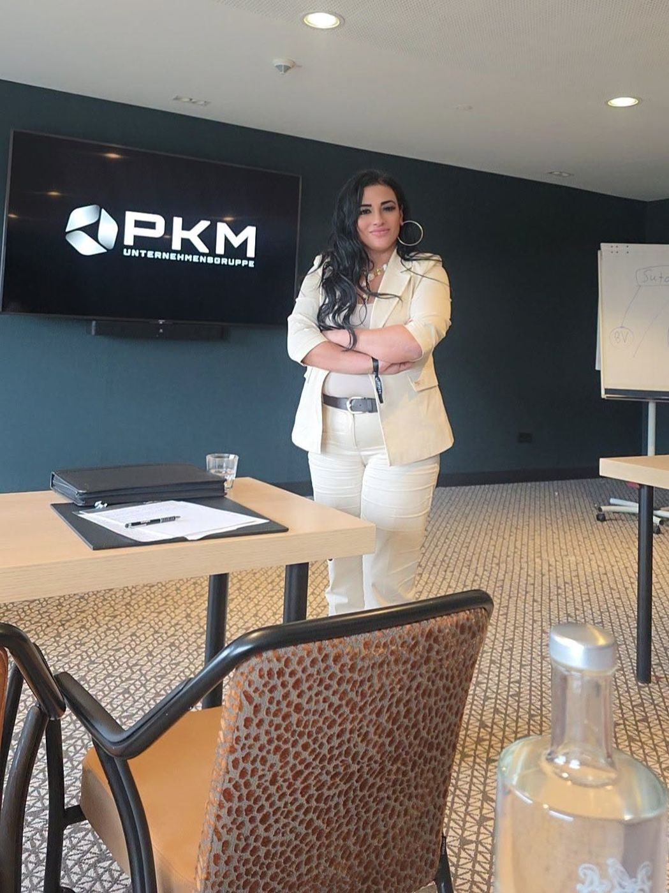
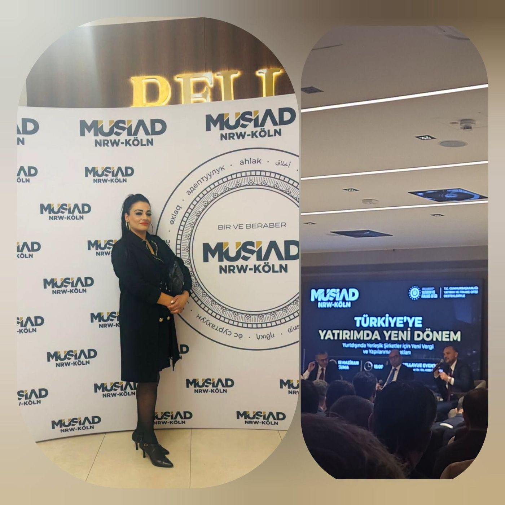
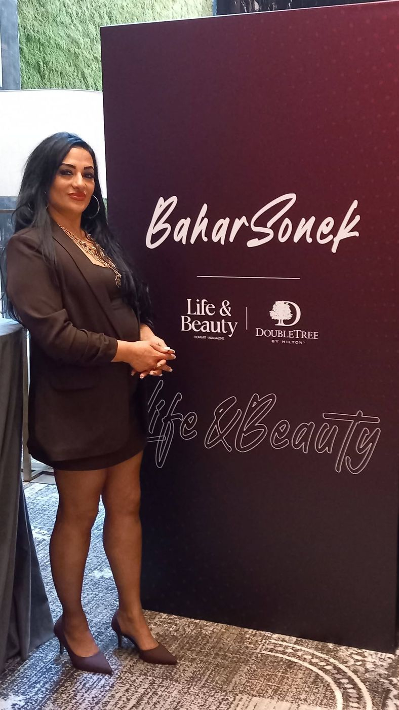
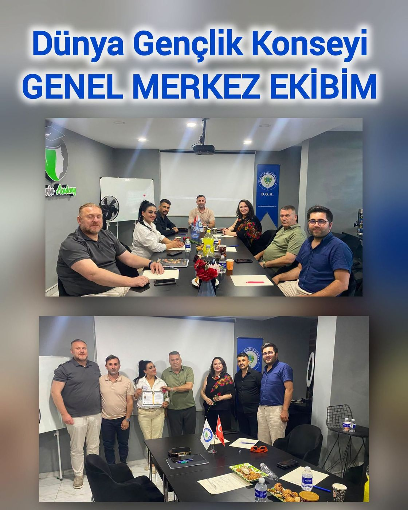
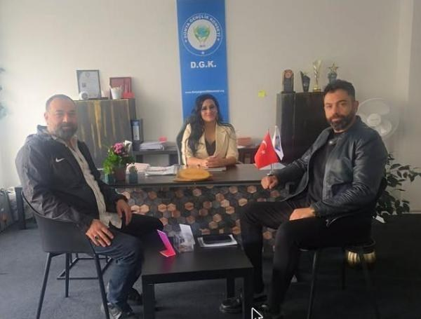

Wer ist Bahar Sonek?
Ein Weg von einer eher zurückhaltenden jungen Frau zu einer offenen, starken und inspirierenden Unternehmerin.

Der Gesellschaft nützen, Menschen den Weg zeigen
Bahar Sonek wurde 1982 in Gelsenkirchen geboren. Ihre Familie stammt aus Adana; ihre Schulzeit schloss sie am Gymnasium in Deutschland ab. Vor rund 12 Jahren begann sie ihren beruflichen Weg in der Versicherungsbranche.
Mit wachsendem Wissen und Erfahrung gründete sie ihr eigenes Büro – ihr Ziel war stets, besser zu werden und sich weiterzuentwickeln. Später spezialisierte sie sich auf Staatsbürgerschaften im Ausland, besuchte zahlreiche Fortbildungen und wurde für ihre Arbeit mehrfach ausgezeichnet.
Der Gesellschaft zu nützen und Menschen den Weg zu zeigen, ist ihre wichtigste Motivation. Früher eher zurückhaltend, hat dieser Weg sie zu einer offenen, starken und inspirierenden Frau gemacht. Heute ist Bahar Sonek eine visionäre Unternehmerin, die in vielen Bereichen aktiv ist und ihren Weg entschlossen weitergeht.
Schritt für Schritt bis heute
Geboren in Gelsenkirchen
Als Tochter einer Familie aus Adana in Gelsenkirchen geboren.
Gymnasium
Schulabschluss am Gymnasium in Deutschland.
Versicherungsbranche
Beginn des beruflichen Weges in der Versicherungsbranche.
Eigenes Büro
Gründung des eigenen Büros in Gelsenkirchen: Creative Dienstleistungen.
Internationale Beratung
Spezialisierung auf Staatsbürgerschaften im Ausland, zahlreiche Fortbildungen.
Auszeichnungen, Medien und D.G.K.
„Beste international erfolgreiche Übersetzerin und Beraterin des Jahres“ (2026) und „Erfolgreichste Geschäftsfrau des Jahres“ („Avrupa'nın Yıldızları“); Sendungen bei TELE1 und Business Channel Türk TV; Regionalpräsidentin des Weltjugendrats in Deutschland.
Was uns ausmacht
Vertrauen
Ihre Daten und Unterlagen sind bei uns sicher – Vertraulichkeit hat Vorrang.
Schnelligkeit
Wir behalten Fristen im Blick und erledigen Ihre Anliegen rechtzeitig.
Richtigkeit
Richtige Informationen, richtige Orientierung – „Richtige Unterstützung“ ist unser Name.
Herzlichkeit
Wir hören jedem Menschen zu wie einem Familienmitglied – auf Deutsch oder Türkisch.
Gespräche, Veranstaltungen, Begegnungen




Unsere Vision: in einer globalen Welt starke Schritte gehen – und gemeinsam mit Ihnen in eine bessere Zukunft.Bahar Sonek

Weltjugendrat – Regionalpräsidentin Deutschland
Neben ihrer beruflichen Tätigkeit engagiert sie sich als Regionalpräsidentin des Weltjugendrats (D.G.K.) in Deutschland für junge Menschen.
D.G.K. DeutschlandWir hören Ihnen zu.
Bringen Sie Ihre Unterlagen, Fragen oder Pläne mit – den Rest lösen wir gemeinsam. Schreiben Sie uns für einen Termin.